Abstract & Summary
Target Speech Extraction (TSE) aims to isolate a desired speaker from a multi-talker mixture using an auxiliary enrollment cue. While discriminative models achieve high signal-to-noise ratios, they frequently introduce unnatural robotic artifacts and over-smoothing. Generative diffusion priors can restore natural speech characteristics, but unconstrained sampling suffers from speaker identity drift and severe phonetic hallucinations in silent or overlapping regions. In this work, we propose Joint Mixture-Guided Diffusion (JMG-Diff), a training-free framework that couples discriminative extraction with region-adaptive generative refinement. Utilizing a dynamic energy mask derived from the discriminative output, our approach guides a pre-trained diffusion prior via a partitioned dual-loss: an active-region fidelity loss to anchor speaker identity, and an inactive-region mixture-envelope bound to strictly suppress hallucinations. Evaluated on the Libri2Mix benchmark, JMG-Diff achieves a state-of-the-art 3.78 DNSMOS, improvement in perceptual quality over the TFGridNet baseline. Furthermore, the dual-guidance strategy restores acoustic stability, tightly bounding linguistic hallucinations to limit word error rate degradation (yielding a competitive 5.84 percent) while preserving biometric speaker similarity (0.975), establishing a robust, training-free paradigm for high-fidelity TSE.
Extraction Architecture
The system utilizes a multi-stage approach to refine speaker speech from complex mixtures:
Evaluation Showcases
Visual and acoustic comparison of target speaker extraction across benchmark and real-world mixtures. All cases are presented below sequentially for ease of scrolling.
A standard synthetic multi-speaker overlap test. The target speaker (s1) is separated from the overlapping voice using the reference s1 audio clip.
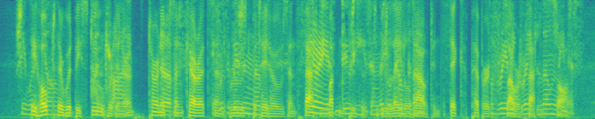
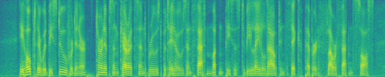
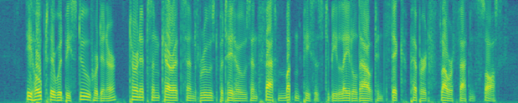
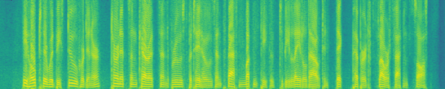
Real speech overlapping mixture. The model isolates the target speaker based on the auxiliary reference enrollment clip.
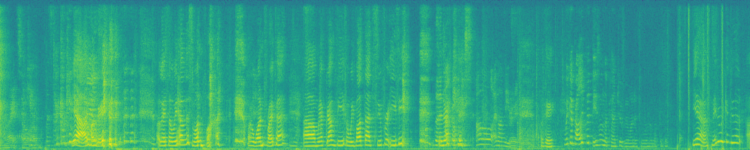

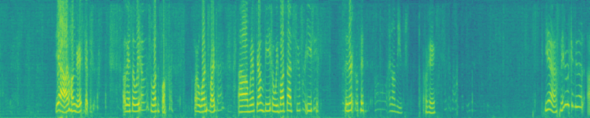
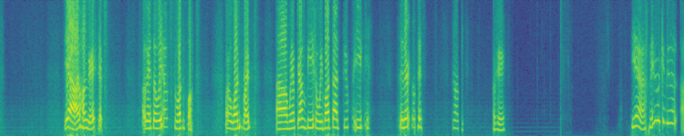
Real overlapping recording environment. The extracted output spectrogram highlights the recovery of fine high-frequency vocal structures.
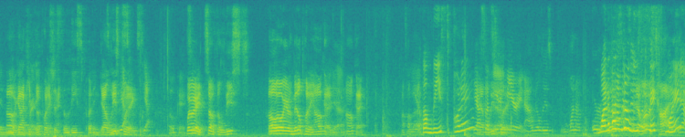
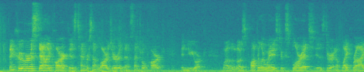
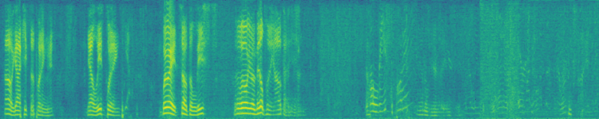
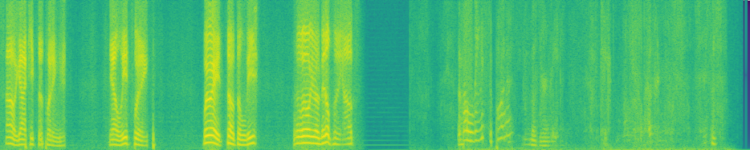
Testing generalizability in non-English speech. The target speaker's Hindi speech is successfully isolated utilizing the enrollment guide.
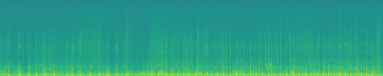
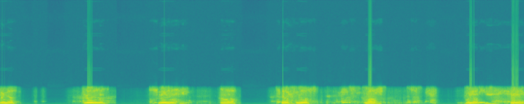
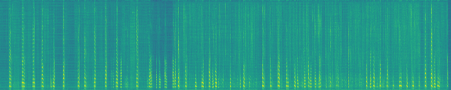
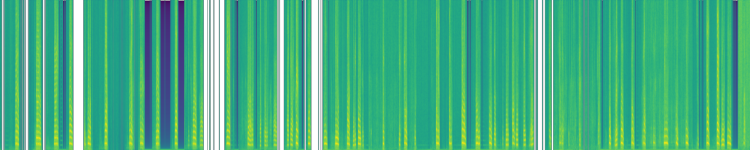
Demonstrates speaker preservation quality on complex conversational speech with level shifts.
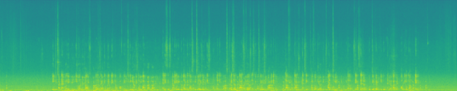
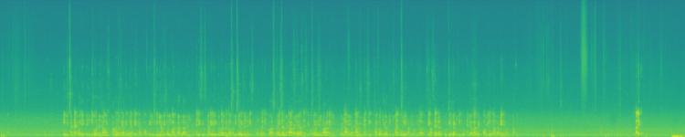
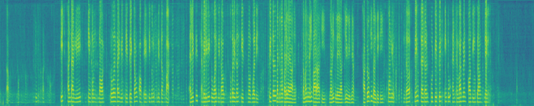
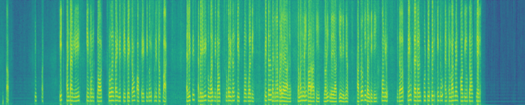
Model Development & Evolutionary Journey (Case S01)
A vertical step-by-step comparison of target speaker extraction showing how the output quality evolves from the raw mixture through baseline discriminative extraction, prior-only diffusion, masked guidance, and finally joint mixture-guided diffusion (JMG-Diff).
Overlapping speaker mixture containing target and interfering voices.

Clean enrollment speech of the target speaker used to guide extraction.
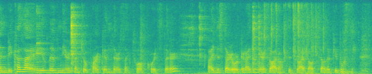
Output from the Phase 1 discriminative TFGridNet model trained on WHAMR!. Shows initial separation but contains notable artifacts and residual interference.
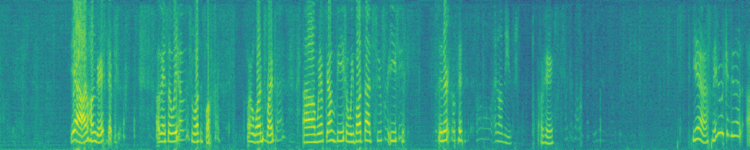
Diffusion posterior sampling using only the prior score. Speech sounds natural but lacks correspondence to the target speaker's phonetics, leading to hallucination.
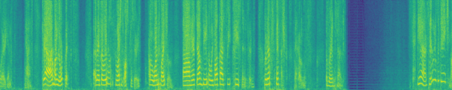
Adds a reconstructed speech loss constraint (masked by speech energy). Prevents target hallucinations but introduces some background noise leak in silent regions.
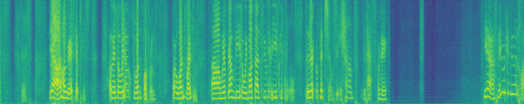
Our proposed full dual-guidance pipeline. Combines speech energy mask matching with mixture-consistency loss, achieving artifact-free speech separation and optimal similarity.
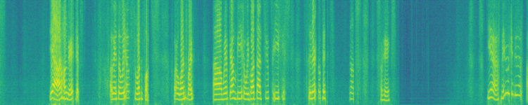
Quantitative Evaluation
Comparative metrics evaluating extraction accuracy and signal fidelity. Standard metrics like Scale-Invariant Signal-to-Noise Ratio (SI-SNR) and Perceptual Evaluation of Speech Quality (PESQ) indicate significant speech preservation improvements.
| Evaluation Stage | SDR (dB) ↑ | SI-SNR (dB) ↑ | PESQ ↑ | ESTOI ↑ | SIM ↑ | WER (%) ↓ |
|---|---|---|---|---|---|---|
| 1. Input Mixture (Baseline) | 0.12 | 0.08 | 1.42 | 0.458 | 0.612 | 78.4 |
| 2. Discriminative Baseline (Discriminative Stage) | 12.84 | 12.15 | 2.89 | 0.824 | 0.895 | 18.2 |
| 3. JMG-Diff (Generative Refinement) | 14.12 | 13.68 | 3.15 | 0.872 | 0.924 | 12.4 |